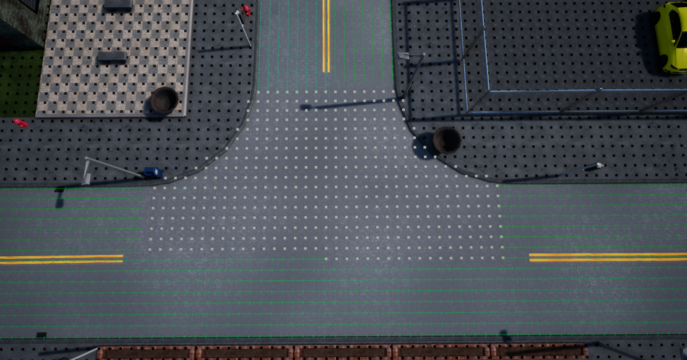

地图定制¶
本文档尚在编写中，可能不完整。
创建新地图¶
!!! 漏洞 使用 Carla 工具从头开始创建地图会导致 UE4.17.2 崩溃（ 问题 #99 ），本指南建议复制现有关卡，而不是从头开始创建地图。
要求¶
在 Linux 或Windows 上从源代码检出并构建 Carla。
创建¶
- 复制现有地图
- 从地图上删除所有不需要的内容
- 保留文件夹“Lighting”、“AtmosphericFog”、“PostProcessVol”和“CarlaMapGenerator”，这将使气候保持预期运行，并保存后期处理。
- 将空白蓝图保留为模板并在开始填充之前复制它可能会很有趣。
- 在 CarlaMapGenerator 中，有一个字段“种子”。您可以通过更改该种子并单击“触发路线图生成”来更改地图。还应选中“将路线图保存到磁盘”。
- 您可以更改种子，直到获得满意的地图。
- 此后，您可以在想要生成汽车的地方放置新的 PlayerStarts。
- 人工智能已经发挥作用，但汽车不会随机行动。车辆将遵循 RoadMapGenerator 给出的指令。它们在直路上会很容易地沿着道路行驶，但在进入交叉路口时则不会那么容易：

（这是道路向车辆发出的指令的调试视图。它们将始终遵循绿色箭头，白点是一条或多条路线之间的共享点，默认情况下它们命令车辆继续直行；黑点偏离道路，车辆没有得到任何指令并向左行驶，试图回到道路上）
-
要获得随机行为，您必须放置 IntersectionEntrances，这将让您重新定义车辆行驶的方向，覆盖道路地图给出的方向（直到它们完成给定的顺序）。（参见两个示例城镇，了解其具体工作原理）。
-
0.7.1 版本之前：对于每个入口，你必须创建一系列空的 参与者，它们将作为引导汽车通过交叉路口的路径点；然后，你必须将相应的 Actor 分配给每条路径
-
0.7.1 版之后：每个 IntersectionEntrance 都有一个名为 routes 的数组，向其中添加一个元素会在世界中创建一个可编辑的样条线，第一个点位于 IntersectionEntrance 上（您可能需要选择另一个对象才能看到它）此样条线定义了任何车辆进入交叉路口时可能采取的路线（就像之前的 Empty 演员所做的那样）您可以像编辑任何虚幻样条线一样配置此路线。每条路线将在以下字段中创建一个元素：“概率”此数组中的每个数字都定义了任何车辆采取相应路线的几率。
-
要改变汽车的速度，请使用速度限制器。它们使用起来很简单。（确保限制转弯速度，否则汽车会试图以全速转弯，但无法成功）
- 交通信号灯需要按照脚本来避免交通事故。十字路口的每条街道都应该有自己的绿灯转弯，而其他街道则不应有绿灯。
- 然后你就可以在整个世界中布满风景和建筑物。
多层建筑¶
此蓝图的目的是使重复和改变高层建筑变得更容易一些。提供一个基础、一个中层和一个屋顶；此蓝图将中层重复到所需的商店数量，并在满足某些条件的情况下将其与最后一层叠加：
- 所有模型枢轴都应位于特定网格的底部中心。
- Al 模型必须准确地在重复发生的地方开始和结束。
该蓝图由以下 6 个特定参数控制：
- GroundFloor：放置在建筑物底部的网格。
- Floor：沿着建筑物重复的网格。
- Roof：建筑物顶部的最终网格。
- FloorNumber：建筑物的楼层数。
- FloorHeightOffset：垂直调整每层楼的位置。
- RoofOffset：垂直调整屋顶的位置。
一旦将该蓝图放置在世界中，所有这些参数都可以被修改。
SplinemeshRepeater¶
!!! 漏洞 参见 #35 SplineMeshRepeater 丢失其碰撞体网格
标准用途：¶
SplineMeshRepeater “Content/Blueprints/SplineMeshRepeater” 是 Carla Project 中包含的一个工具，用于帮助构建城市环境；它沿着样 条线 （虚幻组件）重复和对齐特定选定的网格。其主要功能是构建通常平铺和重复的结构，如墙壁、道路、桥梁、栅栏……一旦将参与者放入世界，就可以修改样条线，以便对象获得所需的形式。定义样条线的每个点都会生成一个新的图块，因此样条线的点越多，它就越明确，但对世界的负担也越大。此参与者由以下参数定义：
- 静态网格物体 (StaticMesh)：沿样条线重复的网格物体。
- ForWardAxis：改变网格轴以与样条线对齐。
- Material：覆盖网格的默认材质。
- Collision Enabled：选择要使用的碰撞类型。
- Gap distance：在每个重复网格之间放置一个间隙，适用于重复的非连续墙壁：灌木链、护柱……
（最后三个变量是针对下一点中要定义的一些特定资产而定的）创建与此组件兼容的资产的先决条件是，所有网格的枢轴都放置在重复开始的最低点，其余网格指向正方向（最好是 X 轴）
特定墙壁（动态材质）¶
在项目文件夹“Content/Static/Walls”中包含一些特定资产，这些资产将与具有一系列特殊特性的 SplineMeshRepeater 一起使用。这些网格的 UV 空间及其材质对于所有网格都是相同的，因此可以互换。每种材质由三个不同的表面组成，最后三个参数会稍微修改这些表面的颜色：
- MainMaterialColor：更改墙壁的主要材质
- DetailsColor：更改细节的颜色（如果有）
- TopWallColor：更改墙壁覆盖物的颜色（如果有）
要添加从此功能中受益的元素，存在 GardenWallMask 文件，它定义了放置材料的 uv 空间：（蓝色空间：MainMaterial；绿色空间：Details；红色空间 TopWall）。
材质主控之间是 WallMaster，它将成为使用此功能的材质的主控。将创建此材质的实例并添加相应的纹理。此材质包括以下参数，供要使用的材质修改：
- Normal Flattener：稍微修改法线贴图值以使其夸大或平整。
- RoughnessCorrection：改变纹理给出的粗糙度值。
其余参数是掩码纹理和颜色校正，这些参数在本例中不会被修改，但在将要发布到世界的蓝图中会被修改。
天气¶
这是负责修改所有照明、环境参与者以及影响气候印象的任何事物的参与者。当在 Config.Ini 中未另行指定时，它会随游戏自动运行，但有自己的参与者可以在编辑器模式下启动以配置气候条件。要完全工作，它将需要以下每个参与者中的一个：SkySphere、Skylight、Postprocess Volume（无边界）和 Light Source 存在于世界中。
- SunPolarAngle：太阳的极角，决定一天的时间
- SunAzimuthAngle：添加到当前关卡的太阳位置
- SunBrightness：天空盒中太阳渲染的亮度
- SunDirectionalLightIntensity：太阳光的强度
- SunDirectionalLightColor：阳光的颜色
- SunIndirectLightIntensity：主光反射的强度
- CloudOpacity：天空盒上云渲染的可见性
- HorizontFalloff：确定天顶和地平线颜色之间的渐变高度
- ZenithColor：定义天顶的颜色。
- HorizonColor：定义地平线的颜色。
- CloudColor：定义云的颜色（如果有）。
- OverallSkyColor：将天空中的每个颜色元素乘以单一颜色。
- SkyLightIntensity：从天空反射的光的强度。
- SkyLightColor：从天空反射的光的颜色。
- Precipitation：定义是否有降水活动。
- PrecipitationType：活跃降水的类型。
- PrecipitationAmount：所选降水的数量。
- PrecipitationAccumulation：所选降水的积累。
- bWind：定义是否有风。
- WindIntensity：定义风强度。
- WindAngle：定义风向。
- bOverrideCameraPostProcessParameters：定义是否覆盖默认的相机后期处理。
- CameraPostProcessParameters.AutoExposureMethod：定义自动曝光的方法。
- CameraPostProcessParameters.AutoExposureMinBrightness：定义自动曝光在最终图像中算作的最小亮度。
- CameraPostProcessParameters.AutoExposureMaxBrightness：定义自动曝光在最终图像中算作的最大亮度。
- CameraPostProcessParameters.AutoExposureBias：使最终图像变暗或变亮，达到定义的偏差。
您可以根据需要在项目中保存任意数量的不同配置，并通过 设置文件 选择在构建时应用的配置；或者在构建级别或测试时在编辑器中应用。